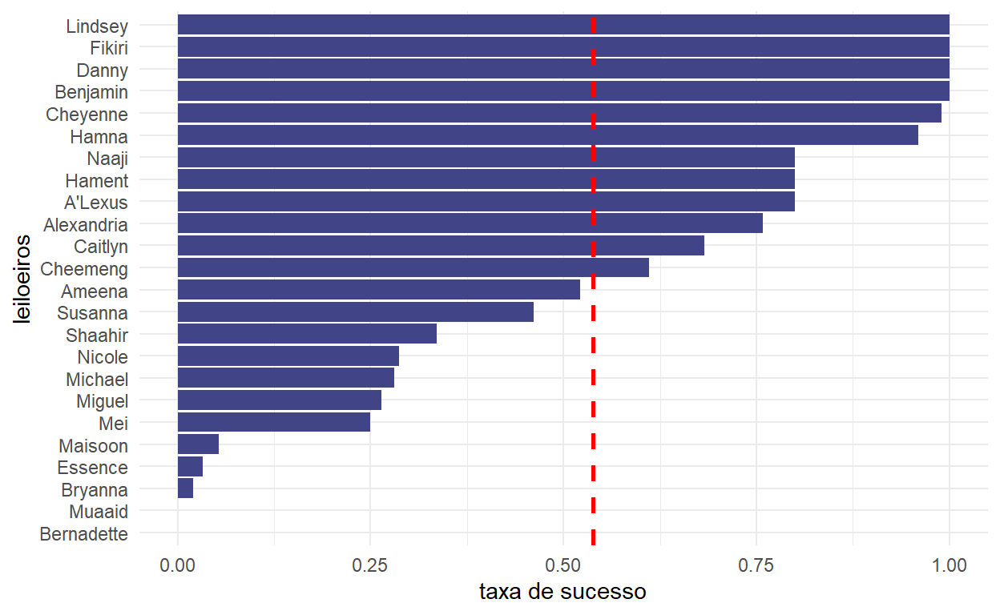
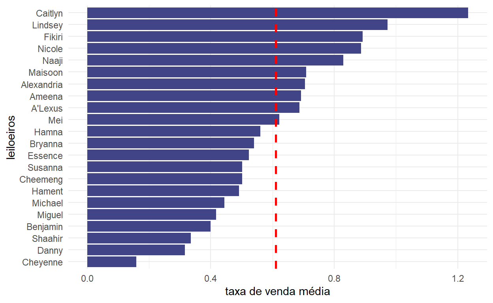

Este artigo busca compreender o perfil dos leiloeiros nos processos de falência em São Paulo
Sempre que uma empresa entra em falência, se inicia um procedimento de arrecadação dos ativos. Essa arrecadação pode levantar desde plásticos triturados, avaliados em R$ 1,00 (um real), até imóveis de R$ 157.000.000,00 (157 milhões de reais). Independente do valor, esses bens na maioria dos casos vão para leilão. E no leilão, há sempre algum responsável por alienar esses bens. O responsável é o leiloeiro. Esse leiloeiro irá determinar as condições de venda dos bens, o que envolve definir (1) se eles serão vendidos em lotes, agrupando vários bens em uma única venda, ou individualmente; (2) o valor mínimo que os bens poderão ser vendidos; (3) a data do leilão; (4) a modalidade do leilão (presencial, eletrônico ou ambos); (5) o lance mínimo, entre outras condições. O importante de notar é que cada leiloeiro possui certa discricionariedade para agir, pois há algumas escolhas que ele deverá realizar em cada leilão, ao definir as condições de arrematação dos bens.
Se há várias estratégias possíveis para os leiloeiros utilizarem, então podemos dizer que alguns profissionais poderão realizar melhores escolhas do que outros. Assim, o que esse artigo busca é tentar definir qual leiloeiro foi mais bem sucedido nos leilões relacionados aos processos de falência de São Paulo.
A base que utilizaremos para tanto é uma das bases de dados da 3ª fase do Observatório da Insolvência da ABJ, isto é, o observatório das falências em São Paulo. Mais especificamente, utilizaremos a base que contém todos os bens que foram a leilão, em SP. Cada observação é um bem diferente. E cada coluna é uma característica desse bem. As principais características que utilizaremos aqui são: o processo no qual esse bem se encontra; o leiloeiro responsável pela alienação desse bem; o valor de avaliação dos bens; a informação de se o bem vendeu ou não; e o preço pelo qual o bem foi arrematado.
Com base nesses dados, podemos pensar em estratégias para determinar o sucesso dos leiloeiros. Iremos fazer isso colocando os leiloeiros para jogar diversos jogos entre si, disputando os melhores scores em cada jogo. Veremos a seguir as regras dos jogos.
A única regra para a habilitação dos leiloeiros nos jogos é que eles sejam pessoas físicas. A base original continha algumas pessoas jurídicas. Entretanto, muitas dessas pessoas jurídicas estavam associadas a um único leiloeiro, sendo possível, portanto, substituir a pessoa jurídica por uma pessoa física facilmente. Isso aconteceu para o “Mega Leilões”, “Gold Leilões”, “D1 Lance”, “Hasta Pública” e “Casa Reis”. A tabela a seguir indica a relação entre as pessoas jurídicas e os respectivos leiloeiros por detrás delas.
| Pessoa jurídica | Leiloeiro |
|---|---|
| Mega Leilões | Fernando José Cerello Gonçalves Pereira |
| Hasta Publica BR | Euclides Maraschi Junior |
| Gold Leilões | Uilian Aparecido da Silva |
| Casa Reis Leilões | Eduardo dos Reis |
| D1 Lance | Dannae Vieira Avila |
Houve uma casa de leilões, entretanto, que não havia uma pessoa física correspondente. Foi a casa Lance Alienações Eletrônicas Ltda. Este, portanto, foi o único candidato desqualificado.
Ao fim, ficamos com 24 concorrentes.
Ao todo há 4 jogos.
O primeiro jogo é o Coletando leilões. Este jogo funciona da seguinte maneira: o juiz irá escolher algum leiloeiro de sua confiança para realizar o leilão. O leiloeiro que conseguir mais processos, será o vencedor. Há um total de 135 processos com leilões. Então o máximo de leilões que alguém pode acumular é 135, e o mínimo é 1.
O segundo jogo é O tamanho do peixe. Este jogo busca comparar, não a quantidade de processos de cada leiloeiro, mas o valor médio dos leilões que lhes foi confiado. Para isso, calculamos o valor total de cada um dos processos e dividimos pelo total de bens. Ganha quem tiver um valor médio por processo maior.
O terceiro jogo é Quem vende mais?. Este jogo (e o próximo também) está olhando, não para características dos leilões que foram encaminhados a cada um dos leiloeiros, mas para os resultados desses leilões. Assim, o que está sendo comparado aqui é o que chamaremos de “taxa_sucesso”. É uma conta simples: de todos os bens que poderiam ter sido vendidos, quantos de fato conseguiram ser alienados? Essa taxa é um valor de 0 a 1. O leiloeiro que obtiver a maior taxa será o ganhador.
O quarto jogo e o último jogo é Quem dá mais?. O que vai ser comparado é, não a taxa de bens vendidos, mas o valor pelos quais esses bens foram vendidos. Para cada bem alienado, foi calculada uma taxa de venda. Essa taxa foi calculada por valor vendido / valor de avaliação. E o que comparou é a média dessa taxa de venda. Essa taxa irá assumir valores entre 0 e 1 se o bem tiver sido vendido por valores abaixo da avaliação (o que é bem frequente), mas irá assumir valores maiores que 1 caso o valor de venda seja maior que o valor de avaliação. Algumas taxas chegaram a ser de 140 e infinito. Esses valores representam uma inconsistência na base. Para evitar que tais valores fossem considerados na competição (o que seria considerado roubar no jogo!), aplicamos um filtro para manter apenas as taxas menores ou iguais a 10. Ou seja, os bens poderiam ser vendidos por no máximo 10 vezes mais que o valor de avaliação. Acima disso, aquele bem seria desconsiderado.
Para cada um dos jogos, podemos ordenadar os leiloeiros. Cada um dos jogos possui bases diferentes de pontuação. Por exemplo, no jogo 1, os jogadores podem fazer de 0 a 135 pontos, mas no jogo 3, os jogadores podem fazer só de 0 a 1 pontos. O problema é que dessa forma, o ganhador do jogo 1 teria mais vantagem do que o ganhador do jogo 3. Para resolver este problema, padronizamos as pontuações, de modo que a colocação de um jogador se tornou a sua pontuação em cada um dos jogos.
Como há 24 concorrentes, a pontuação máxima que alguém pode fazer em cada um dos jogos é de 24 pontos e a mínima, de 1 ponto. Entretanto, nem sempre alguém teremos alguém pontuando 24 pontos, pois, quando dois ou mais leiloeiros empatam entre si, eles recebem a mesma pontuação. Mas o fato de nem todos os jogos chegarem a 24 pontos pode privilegiar alguns jogos, em detrimento de outros. Assim, esses pontos serão normalizados, ou seja, eles serão divididos pelo número de pontos do primeiro lugar.
Ao fim dos 4 jogos, as pontuações serão somadas, para criarmos um placar final. Então o jogador que acumular mais pontos ao fim dos 4 jogos será o vencedor.
Os leiloeiros que ficarem em 1º, 2º e 3º lugares irão receber uma menção especial ao final deste post.
No primeiro jogo, de número de processos que cada leiloeiro recebeu, tivemos um destaque fortíssimo. Fernando José Cerello Gonçalves Pereira assumiu a liderança com quase 40 processos ! O segundo lugar foi Ronaldo Faro, com 28 processos, e o terceiro colocado foi Renato Schlobach Moysés, com 24 processos. O quarto lugar teve apenas 12 processos em sua contagem, e foi Thays Silva Morerira de Sousa. Os próximos jogadores, não passaram de 10 processos, e a moda foi de apenas 1 processo!
Com isso, o placar ficou:
| Leiloeiro | Quantidade de processos | Score jogo 1 |
|---|---|---|
| Fernando José Cerello Gonçalves Pereira | 39 | 9 |
| Ronaldo Sérgio Montenegro Rodrigues Faro | 28 | 8 |
| Renato Schlobach Moysés | 24 | 7 |
| Thais Silva Moreira de Sousa | 12 | 6 |
| Georgios José Ilias Bernabé Alexandridis | 7 | 5 |
| Antonio Hissao Sato Junio | 4 | 4 |
| Dannae Vieira Avila | 4 | 4 |
| Gustavo Moretto Guimarães de Oliveira | 4 | 4 |
| Renata Franklin Simões | 4 | 4 |
| Sérgio Villa Nova de Freitas | 4 | 4 |
| Cezar Augusto Badolato Silva | 3 | 3 |
| Uilian Aparecido da Silva | 3 | 3 |
| André Macedo Campos Toledo | 2 | 2 |
| Dora Plat | 2 | 2 |
| Euclides Maraschi Junior | 2 | 2 |
| Wendell Marcel Calixto Félix | 2 | 2 |
| Alfio Carlos Affonso Zalli Neto | 1 | 1 |
| Danilo Cardoso da Silva | 1 | 1 |
| Douglas José Fidalgo | 1 | 1 |
| Eduardo dos Reis | 1 | 1 |
| Eduardo Jordão Boyadjian | 1 | 1 |
| Fabio Zukerman | 1 | 1 |
| Gustavo Cristiano Samuel dos Reis | 1 | 1 |
| Ronaldo Milan | 1 | 1 |
Como houve muitos candidatos empatados, o primeiro lugar de Fernando rendeu-lhe apenas 9 pontos.
No segundo jogo, o primeiro lugar saiu disparado na frente, com a incrível quantidade de R$ 86.608.346,88 por processo (86 milhões de reais por processo). O ganhador foi Euclides Maraschi Junior. A disputa pelo segundo lugar foi acirradíssima. Por pouco, Fernando José Cerello ganhou de Renato Schlobach Moysés. O valor médio de seus processos foi, respectivamente, de R$ 29.938.436,60 (29 milhões) por proceso e de R$ 26.053.257,72 (26 milhões). Os últimos colocados tiveram arrecadações de 300 mil até 25 mil reais por processo. É uma diferença na escala de 100 vezes em relação aos primeiros colocados.
No fim, o placar ficou:
| Leiloeiro | Valor médio por processo | Score jogo 2 | Pontos acumulados |
|---|---|---|---|
| Euclides Maraschi Junior | 86608346.88 | 24 | 26 |
| Fernando José Cerello Gonçalves Pereira | 29938436.60 | 23 | 32 |
| Renato Schlobach Moysés | 26053257.72 | 22 | 29 |
| Cezar Augusto Badolato Silva | 2439089.73 | 21 | 24 |
| Ronaldo Sérgio Montenegro Rodrigues Faro | 2189231.78 | 20 | 28 |
| Thais Silva Moreira de Sousa | 2134669.98 | 19 | 25 |
| Alfio Carlos Affonso Zalli Neto | 1995000.00 | 18 | 19 |
| Gustavo Moretto Guimarães de Oliveira | 1724682.75 | 17 | 21 |
| Gustavo Cristiano Samuel dos Reis | 1600000.00 | 16 | 17 |
| Wendell Marcel Calixto Félix | 986579.95 | 15 | 17 |
| André Macedo Campos Toledo | 657767.50 | 14 | 16 |
| Ronaldo Milan | 522000.00 | 13 | 14 |
| Antonio Hissao Sato Junio | 460986.00 | 12 | 16 |
| Eduardo dos Reis | 347780.00 | 11 | 12 |
| Uilian Aparecido da Silva | 283645.00 | 10 | 13 |
| Renata Franklin Simões | 263835.94 | 9 | 13 |
| Dora Plat | 248669.01 | 8 | 10 |
| Georgios José Ilias Bernabé Alexandridis | 86924.93 | 7 | 12 |
| Eduardo Jordão Boyadjian | 67090.00 | 6 | 7 |
| Fabio Zukerman | 52690.00 | 5 | 6 |
| Dannae Vieira Avila | 43476.45 | 4 | 8 |
| Sérgio Villa Nova de Freitas | 41404.08 | 3 | 7 |
| Douglas José Fidalgo | 30000.00 | 2 | 3 |
| Danilo Cardoso da Silva | 25290.00 | 1 | 2 |
Esta disputa rendeu incríveis 24 pontos para Euclides ! Mas isso não foi suficiente para ultrapassar Fernando, nem Renato, que no placar geral estão respectivamente, com 6 e 3 pontos na frente de Euclides.

O terceiro jogo foi o mais disputado até agora. Tivemos 3 leiloeiros empatados em primeiro lugar, todos com uma taxa de sucesso de 1 ponto ! Quem se deu melhor nessa competição foram aqueles que tinham poucos bens para alienar. Com poucos bens era fácil vender tudo. E aqueles com muitos bens tiveram dificuldades em vender tudo. Mas na verdade, ter poucos bens também mostrou um enorme risco: o peso individualmente de um único bem, caso ele não fosse alienado, mostrou-se devastador para os competidores, pois a taxa de sucesso dispencava. Foi o caso de Dora Plat e de Danilo Cardoso, que ficaram com uma taxa de sucesso de 0. Danilo tiha apenas 9 bens para alienar; e Dora, 30. Esse jogo embaralhou bastante a competição, deixando bem mais acirrada a disputa no placar geral.
| Leiloeiro | Taxa de sucesso | Score jogo 3 | Pontos acumulados |
|---|---|---|---|
| Alfio Carlos Affonso Zalli Neto | 1.00 | 18 | 37 |
| Douglas José Fidalgo | 1.00 | 18 | 21 |
| Fabio Zukerman | 1.00 | 18 | 24 |
| Gustavo Cristiano Samuel dos Reis | 1.00 | 18 | 35 |
| André Macedo Campos Toledo | 0.99 | 17 | 33 |
| Antonio Hissao Sato Junio | 0.96 | 16 | 32 |
| Eduardo Jordão Boyadjian | 0.80 | 15 | 22 |
| Sérgio Villa Nova de Freitas | 0.80 | 15 | 22 |
| Wendell Marcel Calixto Félix | 0.80 | 15 | 32 |
| Ronaldo Milan | 0.76 | 14 | 28 |
| Cezar Augusto Badolato Silva | 0.68 | 13 | 37 |
| Gustavo Moretto Guimarães de Oliveira | 0.61 | 12 | 33 |
| Renato Schlobach Moysés | 0.52 | 11 | 40 |
| Renata Franklin Simões | 0.46 | 10 | 23 |
| Ronaldo Sérgio Montenegro Rodrigues Faro | 0.34 | 9 | 37 |
| Euclides Maraschi Junior | 0.29 | 8 | 34 |
| Georgios José Ilias Bernabé Alexandridis | 0.28 | 7 | 19 |
| Thais Silva Moreira de Sousa | 0.26 | 6 | 31 |
| Fernando José Cerello Gonçalves Pereira | 0.25 | 5 | 37 |
| Dannae Vieira Avila | 0.05 | 4 | 12 |
| Eduardo dos Reis | 0.03 | 3 | 15 |
| Uilian Aparecido da Silva | 0.02 | 2 | 15 |
| Danilo Cardoso da Silva | 0.00 | 1 | 3 |
| Dora Plat | 0.00 | 1 | 11 |
A liderança está agora com Renato Scholbach Moysés, mas 2 apenas 2 pontos atrás está Alfio Carlos Affonso Zalli Neto. Será que Renato conseguirá manter sua posição no último jogo?

Por fim, chegamos na final. Esse jogo foi difícil para os leiloeiros com grandes valores de bens em suas mãos, pois aqui o valor inicial contava muito. Não bastava que os bens simplesmente fossem vendidos, eles precisavam ser vendidos pelo maior valor possível.
Muitos candidatos foram desclassificados neste jogo, pois eles não conseguiram vender nenhum bem. Dos que ficaram, era possível que eles vendessem seus bens por taxas de venda maiores que 1, entretanto, o único que conseguiu ter um taxas de venda média maior do que 1 foi Cezar Augusto Badolato. Com isso, temos consolidado o placar final.
| Leiloeiro | Taxa de venda média | Score jogo 4 | Pontos acumulados |
|---|---|---|---|
| Gustavo Cristiano Samuel dos Reis | 0.97 | 23 | 58 |
| Douglas José Fidalgo | 0.89 | 22 | 43 |
| Cezar Augusto Badolato Silva | 0.84 | 21 | 58 |
| Sérgio Villa Nova de Freitas | 0.66 | 20 | 42 |
| Wendell Marcel Calixto Félix | 0.55 | 19 | 51 |
| Antonio Hissao Sato Junio | 0.54 | 18 | 50 |
| Ronaldo Milan | 0.53 | 17 | 45 |
| Alfio Carlos Affonso Zalli Neto | 0.40 | 16 | 53 |
| Eduardo Jordão Boyadjian | 0.39 | 15 | 37 |
| Renato Schlobach Moysés | 0.36 | 14 | 54 |
| Fabio Zukerman | 0.32 | 13 | 37 |
| Gustavo Moretto Guimarães de Oliveira | 0.31 | 12 | 45 |
| Euclides Maraschi Junior | 0.25 | 11 | 45 |
| Renata Franklin Simões | 0.23 | 10 | 33 |
| André Macedo Campos Toledo | 0.16 | 9 | 42 |
| Fernando José Cerello Gonçalves Pereira | 0.16 | 8 | 45 |
| Georgios José Ilias Bernabé Alexandridis | 0.12 | 7 | 26 |
| Ronaldo Sérgio Montenegro Rodrigues Faro | 0.11 | 6 | 43 |
| Thais Silva Moreira de Sousa | 0.11 | 5 | 36 |
| Dannae Vieira Avila | 0.04 | 4 | 16 |
| Eduardo dos Reis | 0.02 | 3 | 18 |
| Uilian Aparecido da Silva | 0.01 | 2 | 17 |
| Danilo Cardoso da Silva | 0.00 | 1 | 4 |
| Dora Plat | 0.00 | 1 | 12 |
Computando todos os jogos, temos o seguinte resultado:
| Leiloeiro | Score jogo 1 | Score jogo 2 | Score jogo 3 | Score jogo 4 | Pontos acumulados | Colocação final |
|---|---|---|---|---|---|---|
| Gustavo Cristiano Samuel dos Reis | 1 | 16 | 18 | 23 | 58 | 17 |
| Cezar Augusto Badolato Silva | 3 | 21 | 13 | 21 | 58 | 17 |
| Renato Schlobach Moysés | 7 | 22 | 11 | 14 | 54 | 16 |
| Alfio Carlos Affonso Zalli Neto | 1 | 18 | 18 | 16 | 53 | 15 |
| Wendell Marcel Calixto Félix | 2 | 15 | 15 | 19 | 51 | 14 |
| Antonio Hissao Sato Junio | 4 | 12 | 16 | 18 | 50 | 13 |
| Ronaldo Milan | 1 | 13 | 14 | 17 | 45 | 12 |
| Gustavo Moretto Guimarães de Oliveira | 4 | 17 | 12 | 12 | 45 | 12 |
| Euclides Maraschi Junior | 2 | 24 | 8 | 11 | 45 | 12 |
| Fernando José Cerello Gonçalves Pereira | 9 | 23 | 5 | 8 | 45 | 12 |
| Douglas José Fidalgo | 1 | 2 | 18 | 22 | 43 | 11 |
| Ronaldo Sérgio Montenegro Rodrigues Faro | 8 | 20 | 9 | 6 | 43 | 11 |
| Sérgio Villa Nova de Freitas | 4 | 3 | 15 | 20 | 42 | 10 |
| André Macedo Campos Toledo | 2 | 14 | 17 | 9 | 42 | 10 |
| Eduardo Jordão Boyadjian | 1 | 6 | 15 | 15 | 37 | 9 |
| Fabio Zukerman | 1 | 5 | 18 | 13 | 37 | 9 |
| Thais Silva Moreira de Sousa | 6 | 19 | 6 | 5 | 36 | 8 |
| Renata Franklin Simões | 4 | 9 | 10 | 10 | 33 | 7 |
| Georgios José Ilias Bernabé Alexandridis | 5 | 7 | 7 | 7 | 26 | 6 |
| Eduardo dos Reis | 1 | 11 | 3 | 3 | 18 | 5 |
| Uilian Aparecido da Silva | 3 | 10 | 2 | 2 | 17 | 4 |
| Dannae Vieira Avila | 4 | 4 | 4 | 4 | 16 | 3 |
| Dora Plat | 2 | 8 | 1 | 1 | 12 | 2 |
| Danilo Cardoso da Silva | 1 | 1 | 1 | 1 | 4 | 1 |
Menção especial aos vencedores: o vencedor é GUSTAVO CRISTIANO SAMUEL DOS REIS, com 60 pontos. Em segundo lugar, com apenas 1 ponto de diferença, temos CEZAR AUGUSTO BADOLATO SILVA. E em terceiro lugar, com 5 pontos a menos que o primeiro lugar, temos ALFIO CARLOS AFFONSO ZALLI NETO.
Parabéns a todos os participantes.